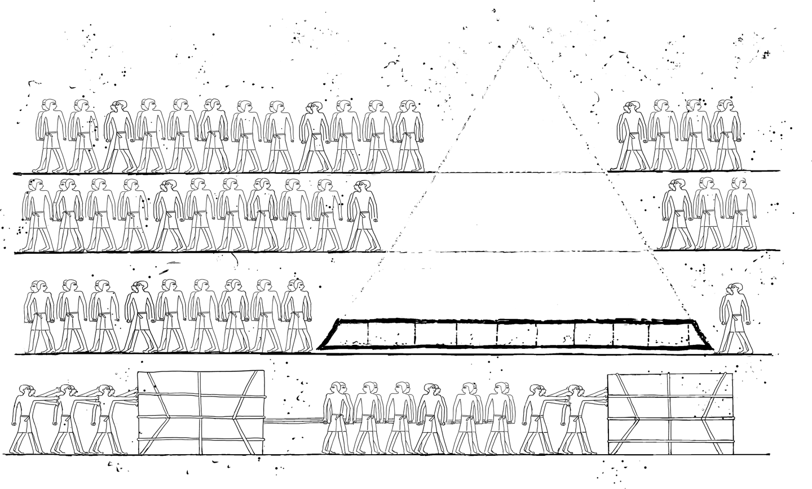

No One Lives in a Foundation

The great pyramids are impressive buildings and attract hordes of tourists even several millennia after their construction. The attraction results not only from the engineering marvel, such as the perfect alignment and balance, but also from the fact that pyramids are quite rare. Besides the US one-dollar bill, you’ll find them only in Egypt, Central America, and IT organizations!
Pyramids are a fairly common sight in IT architecture diagrams and tend to give architects, especially the ones nearer to the penthouse, a noticeable sense of satisfaction. In most cases, the pyramid diagram indicates a layering concept with a base layer that includes functionality commonly needed by the upper layers. For example, the base layer could contain generic functions, while the next layer up would contain industry-specific functions, followed by functionality for specific business functions, and being topped off with customer-specific configuration (Chapter 11).
Layering is a very popular and useful concept in systems architecture because it constrains dependencies between system components to flow in a single direction, as opposed to a Big Ball of Mud (Chapter 8). Depicting the layers in the shape of a pyramid suggests that the upper layers are much smaller and more specialized than the base layers, which provide most of the common functionality.
IT is enamored with this model because it implies that a large portion of the base layer code can be shared or acquired given that it’s identical across many businesses and applications. For example, a better Object-Relational Mapping (ORM) framework or a common business component such as a billing system are unlikely to present a competitive advantage and should simply be bought. Meanwhile, necessary and valuable customizations can be performed in the “tip” with relatively little effort or by lesser-skilled labor. The analogy is consistent with the pyramids of Giza, where the top third of the pyramid’s height makes up only roughly 4% of the material.
The other place littered with pyramids are slide decks depicting organizational structures, where they refer to hierarchical structures. Almost all organizations are hierarchical: multiple people from a lower tier report to a single person on the next upper tier, resulting in a directed tree graph, which, when the root is placed on the top, resembles a pyramid. Even “flat” organizations tend to have some hierarchy, as a single person generally acts as a chairman or CEO. Such a setup makes sense because directing work takes less effort than actually conducting the work, meaning an organization needs fewer managers or supervisors than workers (unless they are trying to buy love; see Chapter 38). Having fewer leaders also helps with consistent decision making and setting a single strategic direction.
Still, there’s a good reason why the Egyptians abandoned the idea of building pyramids some 4,500 years ago: the base layers of a pyramid require an enormous amount of material. It’s estimated that the Great Pyramid of Giza consists of more than two million blocks weighing in at several tons each. Assuming workers toiled day and night over the course of one decade, they would have had to lay an average of three large limestone blocks per minute. Three quarters of the material had to be laid for the first 50 meters of height alone. Even though the result is undoubtedly impressive and long lasting, it can hardly be called efficient.
The economics of building pyramids can function only if there’s an abundance of cheap or forced labor (historians still debate whether the pyramids were built by slaves or paid workers) or a pharaoh’s unbelievable accumulation of wealth. In addition to resources, one also needs to bring a lot of patience. Building pyramids doesn’t mix well with economies of speed (Chapter 35). Some of the pyramids in Egypt weren’t even finished during the pharaoh’s lifetime.
Functional pyramids as we find them in IT system designs face another challenge: the folks building the base layer not only need to move humongous amounts of material, they also must anticipate the needs of the teams building the upper layers. That’s a lot more difficult to do in IT pyramids where things tend to evolve over time (Chapter 3).
Building an IT pyramid purely from the bottom up incurs several problems:
First, the lower layers alone don’t provide much value to the business—they are merely a foundation for more things to come. The result is a large investment with a slow return of value, not something a typical business is looking for.
It also negates the Agile principle of “use before reuse.” Building a base layer means designing functions to be reused later without first actually using them. This can be a guessing game at best.
Lastly, it also dangerously ignores the Build-Measure-Learn cycle (Chapter 36) of learning what’s needed from observing actual usage. What if the business expected a different pyramid?
No one likes to live in a foundation. Therefore, delivering only a base layer has limited business value.
Not limited to pyramids but applicable to any layered system is the challenge of defining the appropriate seams between the layers. Done well, these seams form abstractions that hide the complexity of the layer below while leaving the layer above with sufficient flexibility (Chapter 11). It’s not easy to find examples that work well—like abstracting packet-based network routing behind data streams (sockets)—but when implemented well, this enables major transformations like the internet. Normal IT teams can’t expect to be quite that lucky.
If you’re determined to build an IT pyramid, the best way to do so is from the top down. This is not something you can do with real pyramids, but software does allow us to defy gravity in this case. When I mention “top down,” I am referring to the way the pyramid is constructed, not the way the project is managed. Ironically, “top-down management” leads to pyramids being built bottom up.
To build an IT pyramid from the top, you start with a specific application or service that delivers customer value, thus assuring use before considering resue and avoiding the dangerous notion of “reusable.” When multiple applications can utilize a specific feature or functionality, you can let the related components “sift down” into a lower layer of the pyramid, making them more broadly available. Building the pyramid this way ensures that the base layer contains functionality that’s actually needed as opposed to functions that some people, often the enterprise architects (Chapter 4) far away from actual software development, believe might be needed somewhere, sometime.
“Reusable” can be a dangerous word. It describes components that were designed to be widely used but aren’t.
Anticipating some needs ahead of time, such as the much-mentioned ORM framework, is fine. So is building some of the pyramid base layers like operating systems. In many ways, cloud computing is a massive base layer, but one with very nice seams.
Building pyramids from the top can lead to some amount of duplication; for example, if two independent development teams build similar functionality that’s not yet part of the base layer. Transparency across teams—for example, by using a common source code repository or a common service registry—can help detect such duplication early. While too much duplication may be undesired, we must keep in mind that avoiding duplication isn’t free (Chapter 35).
I have seen base services layers that force a consumer to make many remote calls even to execute a simple function. This approach was chosen by the base-layer architects because it ostensibly provides more flexibility. The first client developer coding against this interface described his experience in quite unkind words, citing well-known issues such as sequencing, partial failure, and maintaining state. The base-layer team’s retort was a new dispatcher layer on top of their service layer to “enhance the interaction.” The team was building the pyramid from the bottom up.
Building the pyramid from the top down also typically results in much more usable APIs (programming interfaces) into the lower layers. Because in the layered model the consumers of the lower layers live on top, building APIs from the top equates to being customer centric: rather than guessing what your customers (other development teams in this case) might want, you aderive it from actual use.
Building pyramids is popular in IT for another reason: the completion of the pyramid’s base layer provides a proxy metric for actual product success. It allows teams to claim major progress without any meaningful validation of business impact.
It’s analogous to developers’ love of building frameworks: you get to devise your own requirements, and upon delivery of those requirements, you declare success without any actual user having validated the need nor the implementation. In other words, designing pyramid base layers allows penthouse architects (Chapter 1) to purport the notion that they are connected to the engine room without facing the scrutiny of actual product development teams or, worse yet, real customers.
The folks highest up in the organizational pyramid love to design the bottom layers of the IT system pyramid, far away from actual users.
It’s ironic that the folks highest up in the organizational pyramid love to design the bottom layers of the IT system pyramid. The reason is clear: building successful applications is more difficult than generic and unvalidated base layers. Unfortunately, by the time the bluff becomes apparent, the penthouse architects are almost guaranteed to have moved to another project.
While IT building pyramids can be debated, organizational pyramids are largely a given: we all report to a boss, who reports to someone else, and so on. In large organizations, we often define our standing by how many people are above us in the corporate hierarchy. The key consideration for an organization is whether they actually live in the pyramid; in other words, whether the lines of communication and decision making follow the lines in the hierarchy. If that’s the case, the organization will face severe difficulties in times that favor economies of speed (Chapter 35) because pyramid structures can be efficient, but they are neither fast nor flexible: decisions travel up and down the hierarchy, often suffering from a bottleneck in the coordination layer (Chapter 30).
Luckily, many organizations don’t actually work in the patterns described by the org chart but follow a concept of feature teams, tribes, or squads. These organizational elements typically have complete ownership of an individual product or service: decisions are pushed down to the level of the people actually most familiar with the problem. This speeds up decision making and provides shorter feedback loops.
Some organizations are looking to speed things up by overlaying communities of practice over their structural hierarchy, bringing people with a common interest or area of expertise together. Communities can be useful change agents, but only if they are empowered and have clear goals (Chapter 27). Otherwise, they run the risk of becoming communities of leisure, a hiding place for people to debate and socialize without measurable results.
We should wonder, then, why organizations are so enamored with org charts that they adorn the second slide of almost any corporate project presentation. My hypothesis is that static structures carry a lower semantic load than dynamic structures: when presented with a picture showing two boxes, A and B, connected by a line, the viewer can easily derive the model: A and B have a relationship. One can almost imagine two physical cardboard boxes connected by a string wire. Dynamic models are more difficult to internalize: if A and B have multiple lines between them that depict interaction over time, possibly including conditions, parallelism, and repetition, it’s much more difficult to imagine the reality the model is trying to depict. Often, only an animation can make it more intuitive. Hence, we are more content with static structures even though understanding a system’s behavior (Chapter 10) is generally much more meaningful than seeing its structure.
Running an organization as a pyramid can be slow and inhibit feedback cycles, which are needed to drive innovation. However, some organizations have a pyramid model that’s even worse: the inverse pyramid. In this model, a majority of people manage and supervise a minority of people doing actual work. Besides the apparent imbalance, the inevitable need of the managers to obtain updates and status reports from the workers is guaranteed to grind progress to a halt. Such pathetic setups can occur in organizations that once depended completely on external providers (Chapter 38) for IT implementation work and are now starting to bring IT talent back in-house. It can also happen during a crisis, such as a major system outage, which gets so much management attention that the team spends more time preparing status calls than resolving the issue.
A second antipattern ironically occurs when organizations attempt to fix the issues inherent in their hierarchical pyramid setup. They supplement the existing top-down reporting organization (often referred to as a line organization) with a new project organization. The combination is typically called a matrix organization (for once, this isn’t a movie reference) as people have a horizontal reporting line into their project and a vertical reporting line into the hierarchy. However, organizations that are not yet flexible and confident enough to give project teams the necessary autonomy (Chapter 27) are prone to creating a second pyramid, the project pyramid. Now employees struggle not only with one but with two pyramids.
If pyramids aren’t the way to go, how should you build systems, then? I view both systems and organizational design as an iterative, dynamic process that’s driven by the need to deliver business value. When building IT systems, you should add new components only if they provide measurable value. Once you observe a sizable set of common functions, it’s good to push those down into a common base layer. If you don’t find such components, that’s also OK. It simply means that a pyramid model doesn’t fit your situation.